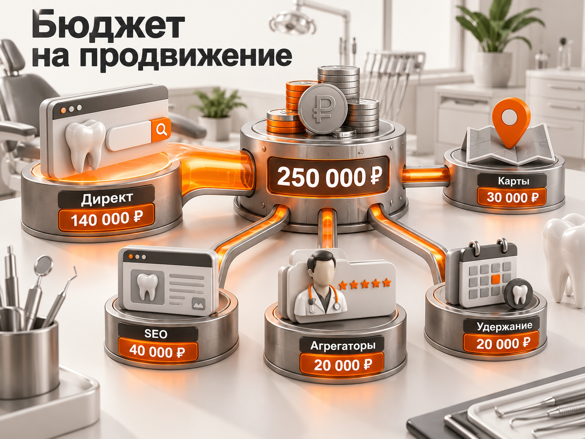
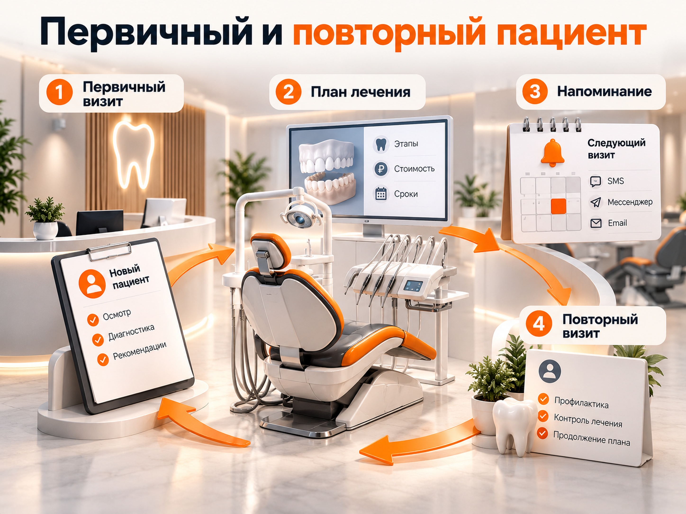

Блог о платном трафике
Реклама стоматологии в 2026 году: как продвигать клинику и привлекать пациентов
Реклама стоматологии в 2026 году должна строиться не вокруг одного канала, а вокруг системы привлечения пациентов. Яндекс Директ закрывает сформированный спрос, Карты работают с локальным выбором клиники, SEO постепенно приводит органический трафик, агрегаторы помогают на этапе сравнения врачей и отзывов, а работа с существующей базой увеличивает количество повторных визитов.
Главная метрика при таком подходе - не стоимость заявки. Считать нужно стоимость пациента, который записался, пришёл в клинику и начал лечение. Дешёвый лид может оказаться плохим результатом, если почти никто из таких обращений не доходит до врача.
На старте я бы не рекламировал весь прайс стоматологии одновременно. Лучше выбрать 2-3 приоритетных направления, посчитать допустимую стоимость пациента по каждому и только после этого распределять бюджет между каналами.
Какие каналы продвижения стоматологии использовать
У стоматологии нет одного универсально лучшего рекламного канала. Разные инструменты работают на разных этапах выбора клиники.
| Канал | Основная задача | Когда особенно полезен |
|---|---|---|
| Яндекс Директ | Перехват сформированного спроса | Человек уже ищет имплантацию, брекеты, лечение или конкретную стоматологию |
| Яндекс Карты | Локальный выбор клиники | Запросы «стоматология рядом», выбор по району, рейтингу и отзывам |
| SEO | Органический коммерческий и информационный спрос | Продвижение услуг, врачей, филиалов и экспертных материалов |
| Агрегаторы | Сравнение врачей и клиник | Пациент изучает отзывы, специалистов, цены и варианты записи |
| Повторные пациенты | Возврат существующей базы | Продолжение лечения, профилактика, гигиена, контрольные визиты |
| VK и контент | Формирование и прогрев спроса | Когда решение принимается долго или клиника развивает узнаваемость |
Эти каналы не нужно оценивать по одной метрике. Для Директа можно считать стоимость обращения и пациента, для Карт важны звонки и маршруты, для SEO - органические обращения, а для существующей базы - повторные визиты и выручка.
Поэтому маркетинговый отчёт стоматологии должен объединять данные из разных источников на уровне пациентов, а не просто складывать клики и заявки.
Какие услуги стоматологии продвигать в первую очередь
Продвигать все услуги одинаково не стоит. Имплантация, ортодонтия, лечение кариеса и профессиональная гигиена отличаются чеком, географией спроса, сроком принятия решения и допустимой стоимостью привлечения пациента.
| Направление | Особенности спроса | Основные точки привлечения |
|---|---|---|
| Имплантация и протезирование | Высокий чек, долгое сравнение клиник, пациент готов ехать дальше | Директ, SEO, агрегаторы, врачи, отзывы |
| Ортодонтия | Длинный цикл решения, важны врач и план лечения | Директ, SEO, агрегаторы, экспертный контент |
| Терапия | Решение принимается быстрее, важна близость клиники | Карты, локальное SEO, Директ |
| Гигиена и профилактика | Локальный спрос и высокий потенциал повторных визитов | Карты, существующая база, локальный поиск |
| Детская стоматология | Особенно важны доверие, врач и отзывы родителей | Карты, агрегаторы, SEO, контент |
Для дорогих направлений пациент обычно изучает больше информации. Одного объявления недостаточно: нужны отдельная страница услуги, врач, стоимость или понятный диапазон цен, этапы лечения и доказательства реальной работы клиники.
Для терапии, гигиены и срочного приёма местоположение обычно играет большую роль. Здесь сильнее становятся Карты, локальные запросы и удобство записи.
Как распределить бюджет на продвижение стоматологии
Универсального процента для каждого канала нет. Распределение зависит от города, известности клиники, количества филиалов, приоритетных услуг и того, какие каналы уже развиты.
Для первоначального планирования можно использовать рабочую модель. Это не норматив рынка, а пример распределения ресурсов клиники, которой нужен и быстрый поток пациентов, и развитие собственных каналов.
При общем бюджете на продвижение 250 000 ₽ в месяц модель может выглядеть так:
| Направление | Бюджет | Доля |
|---|---|---|
| Яндекс Директ | 140 000 ₽ | 56% |
| Яндекс Карты | 30 000 ₽ | 12% |
| SEO и сайт | 40 000 ₽ | 16% |
| Агрегаторы | 20 000 ₽ | 8% |
| Работа с базой и репутацией | 20 000 ₽ | 8% |
| Всего | 250 000 ₽ | 100% |

Если бюджет значительно меньше, я бы не уменьшал каждый канал пропорционально. Лучше оставить 2-3 наиболее важных направления и собрать по ним достаточно данных.
Например, новой стоматологии с небольшим органическим трафиком логично сначала дать большую долю Директу и Картам. Клиника с сильной рекламой, но зависимостью от платного трафика может, наоборот, постепенно увеличивать инвестиции в SEO и собственную пациентскую базу.
Как считать допустимый рекламный бюджет
Бюджет лучше считать от пациента назад, а не от суммы, которую клиника готова потратить.
Предположим, клинике нужно 20 новых пациентов в месяц, а допустимая стоимость привлечения одного пациента составляет 12 000 ₽.
Максимальный бюджет на привлечение:
20 пациентов × 12 000 ₽ = 240 000 ₽.
Теперь предположим, что из нормальных обращений в реальных пациентов превращается 30%.
Тогда допустимая стоимость одного обращения:
12 000 ₽ × 30% = 3 600 ₽.
Если канал стабильно приводит обращения дороже 3 600 ₽, это ещё не означает, что его нужно отключать. У разных направлений стоматологии могут отличаться средний чек, повторные визиты и конверсия в лечение.
Поэтому экономику нужно считать отдельно хотя бы для основных направлений: имплантации, ортодонтии, терапии и гигиены.
Что показывают свежие результаты стоматологий
Опубликованные кейсы полезны для понимания порядка цифр, но превращать результат одной клиники в «средний CPL стоматологии» нельзя.
В московском кейсе стоматологии полного цикла за шесть месяцев 2026 года рекламный бюджет Яндекс Директа составил 2,55 млн ₽. Было получено 505 новых пациентов, стоимость пациента составила около 5 050 ₽, а конверсия из лида в пациента - 31%.
Это сильный результат конкретного проекта, а не прогноз для любой стоматологии.
Совсем другие показатели используются в геосервисах. В открытом кейсе стоматологии в Сочи за май-июль 2026 года количество переходов в профиль Яндекс Карт выросло на 56%, нажатий «Позвонить» - на 41%, а построенных маршрутов - на 35%.
Сравнивать стоимость лида в Директе с переходами или звонками из Карт напрямую нельзя. В конечном итоге оба канала нужно доводить до одной бизнес-метрики: сколько реальных пациентов они привели и сколько эти пациенты принесли клинике.
Яндекс Директ для стоматологии
Яндекс Директ нужен прежде всего для быстрого перехвата уже сформированного спроса. Человек ищет имплантацию, брекеты, протезирование, стоматолога рядом или конкретную услугу и уже находится близко к выбору клиники.
Для разных направлений стоматологии я бы использовал отдельные посадочные страницы и отдельно оценивал их экономику. Пациент, который ищет имплантацию, не должен попадать на общую страницу «Все стоматологические услуги».
При этом на этой странице нет смысла подробно разбирать устройство рекламных кампаний, Поиск, РСЯ, Мастер кампаний, стратегии и минус-фразы. Для этого есть отдельный материал «Яндекс Директ для стоматологии: как привлекать пациентов в 2026 году»:
Здесь важнее другое: Директ является одним элементом общей системы продвижения. Его результат зависит от сайта, врачей, отзывов, цен, работы администратора и того, что происходит с человеком после заявки.
Яндекс Карты для стоматологии
Для локальной стоматологии Яндекс Карты могут быть самостоятельным источником пациентов, а не дополнением к сайту или Директу.
Когда человек ищет стоматологию рядом, он видит сразу несколько клиник и сравнивает расстояние, рейтинг, отзывы, фотографии, часы работы, услуги и цены.
Поэтому профиль стоматологии должен содержать актуальную информацию:
- правильные категории и услуги;
- цены или понятные диапазоны;
- фотографии клиники, кабинетов и команды;
- актуальный график;
- сайт и телефон;
- информацию по каждому филиалу;
- свежие отзывы и ответы клиники.
Для сети стоматологий нельзя оценивать Карты только на уровне бренда. Один филиал может получать хороший поток пациентов, а другой проигрывать соседним клиникам из-за рейтинга, фотографий, отзывов или локальной конкуренции.
Отдельно можно тестировать платное продвижение в Картах. Но сначала я бы привёл в порядок сам профиль. Покупать дополнительную видимость для плохо заполненной карточки не очень рационально.
SEO-продвижение стоматологии
SEO нужно стоматологии как долгосрочный собственный источник спроса. Директ перестаёт приводить новых пользователей сразу после остановки рекламы, а хорошо развитый сайт продолжает получать переходы из поиска.
Основой SEO стоматологии должны быть не статьи ради количества, а правильная структура коммерческих страниц.
Отдельные страницы нужны для действительно разных услуг и интентов:
- имплантация;
- протезирование;
- брекеты;
- элайнеры;
- терапия;
- детская стоматология;
- профессиональная гигиена;
- хирургия.
Дополнительно нужны полноценные страницы врачей, филиалов и цен.
Страница услуги должна не просто содержать текст для поискового робота. На ней нужно показать врача, варианты лечения, стоимость или принцип формирования цены, фотографии клиники, ответы на основные вопросы и понятный способ записи.
Информационные статьи тоже полезны, но выполняют другую задачу. Человек может сначала искать, сколько длится имплантация, как выбирают брекеты или из чего складывается стоимость лечения, а уже потом переходить к выбору клиники.
Так SEO работает не только на прямой запрос «стоматология Москва», но и на более длинный путь пациента до записи.
Агрегаторы и репутация стоматологии
Пациент не всегда выбирает стоматологию через сайт самой клиники. Для части аудитории точкой входа становятся профильные площадки вроде ПроДокторов и НаПоправку.
Особенно это заметно там, где человек выбирает не столько бренд клиники, сколько конкретного врача.
Поэтому присутствие на агрегаторах имеет смысл рассматривать как отдельный канал. Нужны заполненные профили клиники и врачей, актуальные услуги, цены, фотографии и системная работа с отзывами.
Но задача не сводится к тому, чтобы получить максимальный рейтинг.
Отзывы влияют и на другие каналы. Человек может увидеть рекламу в Директе, затем найти клинику на Картах, проверить врача на профильном сайте и только после этого записаться.
Поэтому репутацию лучше воспринимать как слой, который усиливает Директ, SEO, Карты и другие источники трафика одновременно.
Повторные пациенты и работа с существующей базой
Не весь рост стоматологии должен приходить за счёт новых лидов.
У клиники уже есть пациенты, которым могут потребоваться продолжение плана лечения, профилактический осмотр, профессиональная гигиена, контроль результата или другие услуги.
Работа с существующей базой снижает зависимость от постоянной покупки нового трафика.
Здесь особенно важна CRM. Для пациента можно фиксировать не только первый визит, но и дальнейший план лечения, следующий рекомендуемый визит и историю взаимодействия.
Коммуникацию с пациентской базой нужно вести с учётом согласий на получение сообщений и требований к персональным данным.
При расчёте эффективности рекламы поэтому полезно смотреть не только на выручку первого визита. Пациент, привлечённый на одну услугу, может продолжить лечение и возвращаться в клинику в дальнейшем.

Почему нужно считать пациента, а не заявку
В стоматологии важно отслеживать путь пациента от источника обращения до лечения, а для части клиник - и до повторного визита.
Если маркетолог видит только формы и звонки, он не знает реального результата рекламы.
Например, кампания А может приводить обращения по 2 000 ₽, но только 10% людей доходят до клиники. Кампания Б приводит обращения по 4 000 ₽, но до клиники доходит 40%.
При 100 000 ₽ расходов первая кампания даст 50 обращений и 5 пациентов. Стоимость пациента составит 20 000 ₽.
Вторая даст 25 обращений и 10 пациентов. Стоимость пациента составит 10 000 ₽.
По CPL первая кампания выглядит в два раза лучше. По стоимости реального пациента она в два раза хуже.
Поэтому в CRM желательно передавать источник обращения и отслеживать минимум запись, фактический визит и начало лечения.
Какой сайт нужен для продвижения стоматологии
Сайт стоматологии должен помогать человеку выбрать клинику, а не просто перечислять медицинские услуги.
Для приоритетных направлений нужны самостоятельные страницы. На каждой желательно быстро показать:
- чем занимается клиника именно по этой проблеме;
- какие врачи ведут лечение;
- сколько стоит услуга или от чего зависит цена;
- как проходит лечение;
- где находится клиника;
- реальные фотографии;
- отзывы и примеры работ, когда их можно использовать;
- варианты записи.
Особенно плохо работает ситуация, когда реклама имплантации, брекетов, терапии и детской стоматологии ведёт на одну главную страницу.
Чем дороже лечение и дольше пациент принимает решение, тем больше информации ему требуется до записи.
Ограничения рекламы стоматологии
Стоматология относится к медицинским услугам, поэтому рекламу нельзя запускать по тем же правилам, что рекламу обычного коммерческого сервиса.
Для размещения медицинской рекламы в Яндекс Директе требуется подтверждение права оказывать соответствующие услуги. Для российской клиники используется медицинская лицензия с адресом и перечнем разрешённых видов деятельности. Данные в документах должны соответствовать информации о клинике и сайте.
Федеральный закон «О рекламе» также устанавливает специальные требования к рекламе медицинских услуг, включая предупреждение о противопоказаниях и необходимости консультации специалиста.
Поэтому документы, рекламные объявления, изображения и посадочные страницы лучше проверять до запуска кампании.
Пошаговый план продвижения стоматологии
Я бы строил продвижение в такой последовательности:
- Выбрать 2-3 услуги, на которые клинике действительно нужны дополнительные пациенты.
- Посчитать средний чек, маржинальность и допустимую стоимость пациента по каждому направлению.
- Проверить отдельные страницы услуг и страницы врачей.
- Настроить Метрику, коллтрекинг и передачу обращений в CRM.
- Привести в порядок Яндекс Карты и карточки филиалов.
- Заполнить профили клиники и врачей на основных профильных площадках.
- Запустить Яндекс Директ на сформированный коммерческий спрос.
- Начать или усилить SEO основных коммерческих страниц.
- Передавать маркетологу данные о качестве обращений, записях и фактических визитах.
- Настроить работу с существующей пациентской базой.
- Сравнивать каналы по стоимости пациента, а не только по CPL.
- Увеличивать бюджет только там, где понятна экономика привлечения.
Так стоматология получает не набор разрозненных рекламных кампаний, а систему, в которой платные и органические каналы дополняют друг друга.
Какой результат закладывать на старте
Если у стоматологии ещё нет собственной статистики, точный CPL или стоимость пациента обещать нельзя.
Для первоначального прогноза платного трафика в крупном российском городе можно использовать рабочий диапазон около 2 500-4 000 ₽ за обычное обращение. Это не среднее значение рынка, а ориентир для финансовой модели.
Для дорогих направлений и квалифицированных обращений стоимость может быть заметно выше. В свежих кейсах по имплантации встречались значения примерно 6 000-11 000 ₽ за квалифицированный лид.
Но сам по себе CPL мало что решает.
Если клиника получает обращение за 3 000 ₽ и 30% таких обращений становятся пациентами, стоимость пациента составляет около 10 000 ₽.
Если при том же CPL до клиники доходит только 15%, стоимость пациента уже около 20 000 ₽.
Поэтому после накопления собственной статистики все внешние ориентиры нужно заменить фактическими данными клиники.
Правильная задача продвижения стоматологии звучит не как «получать заявки дешевле». Цель - привлекать нужное количество реальных пациентов с допустимой стоимостью и постепенно увеличивать объём без ухудшения экономики.